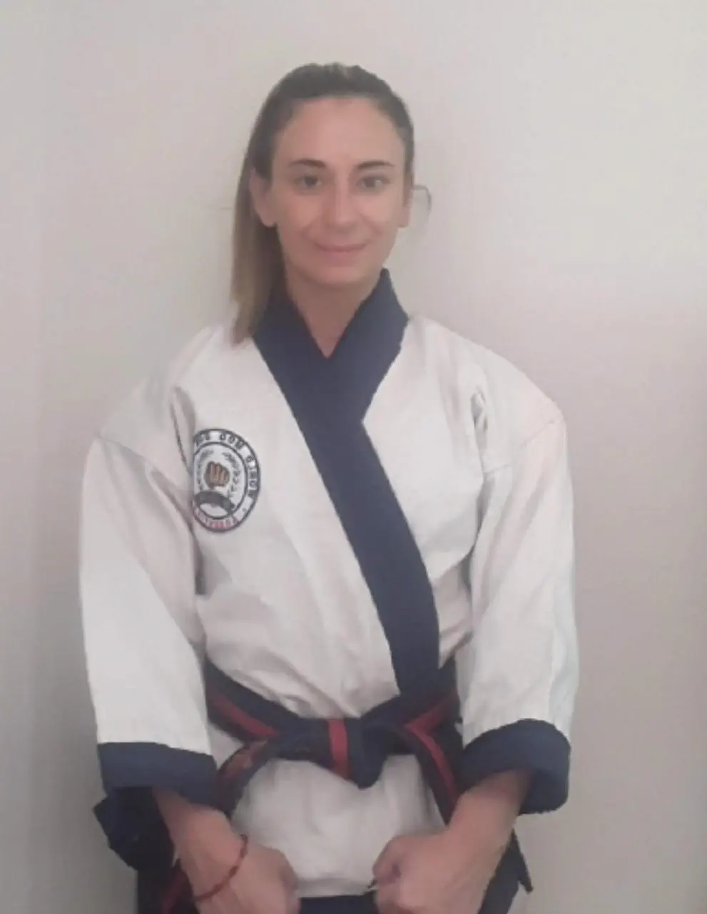
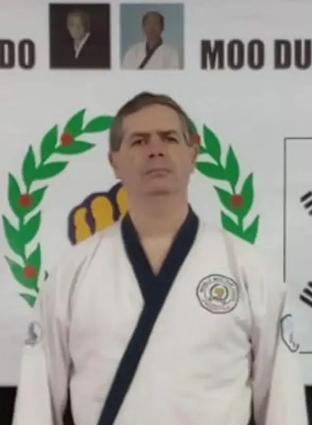

TAC Nacional - Chairman
Presidente TAC Nacional
- Nombrado por Kwan Jang Nim. Limitado a actividades relacionadas con Moo Do (no a la Junta Directiva ni a la Organización).
- Entregar la enseñanza y educación de Moo Do a los miembros en nombre de Kwan Jang Nim.
- Defender la identidad de Moo Duk Kwan basada en los cinco valores Moo Do.
- Realizar Dan Shim Sa y hacer recomendaciones a Kwan Jang Nim en relación con los exámenes.
- Trabajar con el liderazgo organizacional para garantizar que se completen todas las responsabilidades relacionadas con el WMDK TAC.
- Proporcionar un Calendario de Eventos TAC anual para el próximo año a World Moo Duk Kwan.
- Recomendar a los miembros que ascienden a Dan a través de eventos aprobados de Dan Shim Sa.
- Asistir a las funciones del TAC requeridas por el World Moo Duk Kwan.
- Organizar, presentar y asistir a clínicas y seminarios patrocinados por TAC basados en los cinco valores Moo Do.
- Supervisar publicaciones y otras comunicaciones (boletines, artículos de revistas, contenidos de videos, etc.).
- Organizar y conducir campeonatos nacionales, seminarios u oportunidades educativas para instructores y miembros.
- Hacer recomendaciones a Kwan Jang Nim para nombramientos de posibles miembros del TAC.
- Trabajar como un comité, no como un individuo.
- Nombrar examinadores regionales según sea necesario.
- A cargo de: Francisco Rafael Blotta SBN

SHIM GUNG BU: (Energía Mental o espiritual)
- MISION: HAENG JUNG BU “Mantener Unido a MDK”
- Estandarización del protocolo y de la etiqueta.
- Aplicación de la Filosofía Moo Do. Por ejemplo: correcto contacto de ojos, concentración, conocimiento de usted mismo y del medio.
- Comprensión de YONG GI‐ IN NEH ‐ HIM CHO CHUNG ‐ CHUNG JIK ‐ KYUM SON.
- ONG SOOK: desarrollar el espíritu de paz interior en la Escuela.
- Desarrollo de la fortaleza espiritual y mental. “La disciplina va más allá de su deseo personal”.
- Desarrollar seminarios y/o cursos sobre estos temas.
- A cargo de: Natalia Blotta SBN y Fabian Dominguez SBN


NEH GUNG BU: (Energía Interna)
- MISION: JIN HEUNG BU “Motivar, levantar el Espíritu y Ánimo de los miembros MDK”
- Moo Pal Dan Khum.
- HO HOP CHO CHUNG: Comprensión de la respiración.
- Conexión correcta de la respiración y los movimientos; aplicación de la expansión y contracción interior.
- Estudio, desarrollo y aplicación de ejercicios de Ki.
- Comprensión de CHONG SHIN TONG IL.
- Verificar si los estudiantes efectúan sus movimientos con Poder Interior (Ki), o si solamente trabajan físicamente.
- Aplicación del principio “Move without moving” (Moverse sin moverse o extensión del poder).
- Desarrollar seminarios y/o cursos sobre estos temas.
- A cargo de: Ruben Bracco SBN y Alberto Nuñez SBN
TAC ASSISTANT: (Asistentes del TAC)
- MISION: MOO DO SHIM GONG “el corazón de nuestro Arte”
- Deben colaborar, dirigir, guiar y participar en todo lo que pueda representar a Soo Bahk Do Moo Duk Kwan (exámenes, clases, seminarios, cursos especiales, torneos, demostraciones, etc.).
- Revisar el MOO DO SHIM GONG: Disciplina Mental. Implica profesionalismo, apropiado comienzo y final, correcto saludo (inclinación, demostración de Respeto).
- Revisar el MOO DO JA SEH: Postura correcta, trato afable pero firme, conciencia de la presencia de miembros más avanzados, permanente conciencia de la actividad.
- CALLERS: en eventos Oficiales.
- SERVICIO CONTINUO AL TAC: asistir al TAC en todos los eventos que se requiera desde la organización hasta la ejecución.
- A cargo de: Antonella Blotta SBN y Damián Buonanotte SBN

DIGITAL BU: (Grupo Responsables Digital)
- MISION: GONGSIG JEONGBO “Información Oficial”
- Deben velar por la seguridad en la información digital (redes sociales, páginas web, fotos, videos, papers, etc).
- Se encargan de filtrar y adecuar la información que se comparte como Oficial de la Escuela.
- Establecer las pautas y recomendaciones a los alumnos , para cuidar el Arte.
- Distribuyen la información Oficial de la Escuela, dentro y fuera del país.
- Manejan el WMDK ORG ICS.
- Colaborar con la AASBDMDK en la difusión de sus informes de interés.
- Colaborar con la elaboración de publicidad de los Eventos Oficiales.
- A cargo de: Marcelo Picarelli SBN y Federico Bravo SBN.
